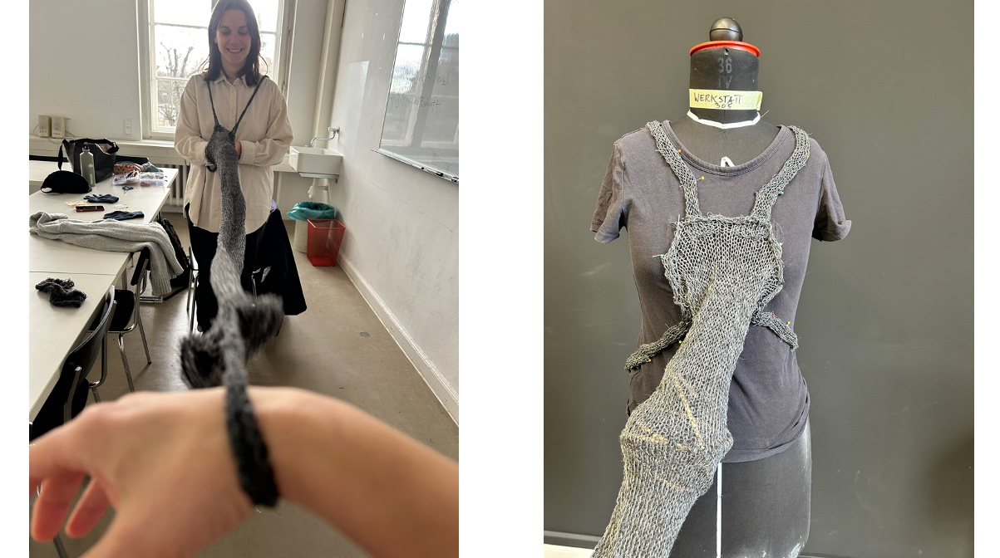
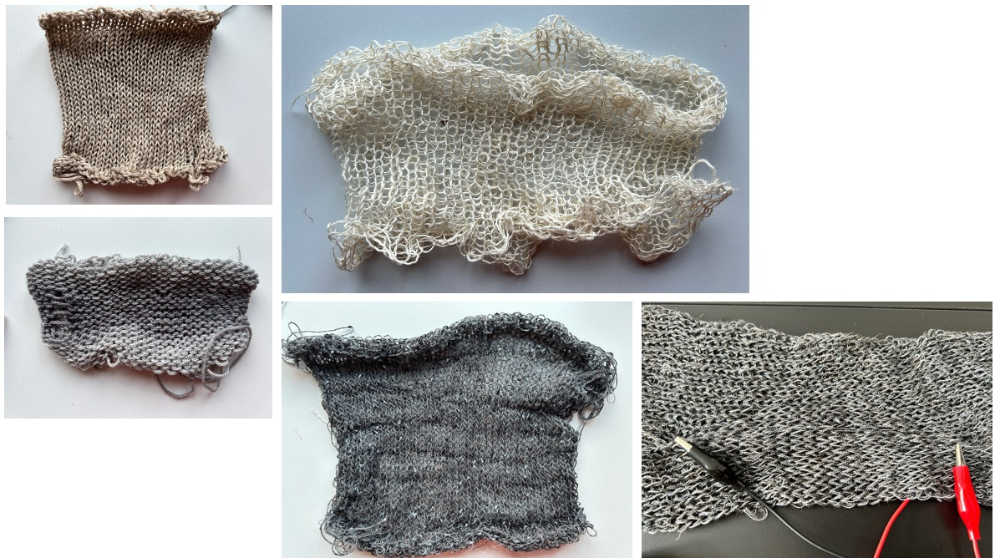

Case study — Interaction design
In Between
An interdisciplinary semester project about the dynamics of communication in close relationships, built from knitted piezoresistive garments and an ambisonic sound system. Three people wear pieces that connect them; the distance between their bodies becomes the instrument.

The premise
Proximity used to do the work. Standing close to someone gave you gesture, expression, tone — everything that sits underneath the words. Instant messaging and social media changed the arrangement: we now communicate most deliberately at distance, and least clearly up close.
Both states have a cost. In close quarters, finding the right words gets harder amid ambient noise. At distance, the message is considered but the emotional register goes missing. The project sits in the gap between those two — hence the name.

Making the material
A piezoresistive knitted sensor that bounces — and the sound bounces with it.
Sound is off by default; the control is in the corner.
What the piece does
Drawn close, the conversations overlap. Moving apart, they come clear — the garment plays the distance between people.
How it works
As the fabric stretches or relaxes, the movement modulates the soundscape. Granular synthesis blends ambient noise with clear spoken words inside an ambisonic sphere, and the tension in the garment focuses those voices onto a particular point in the room — so the sound has a position, not just a volume.